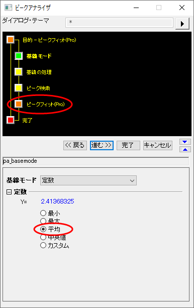
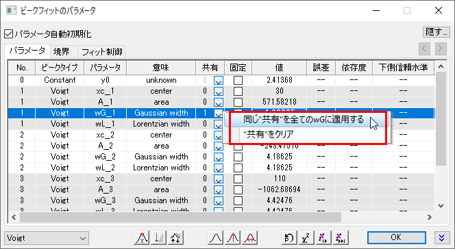
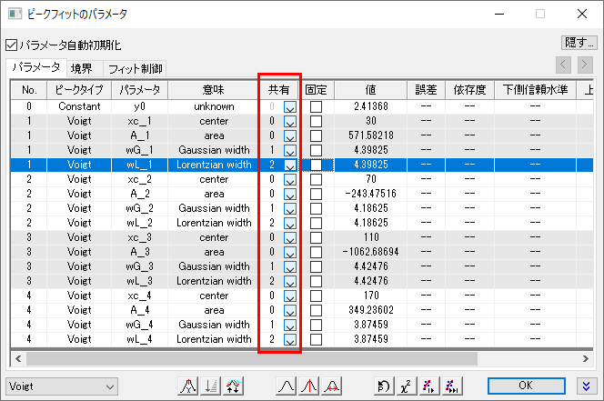
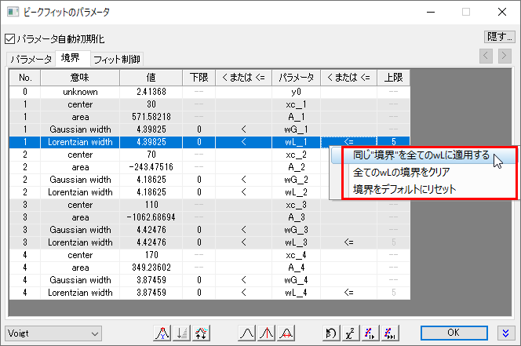
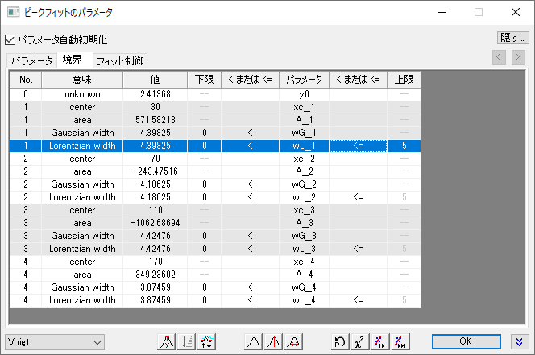

複数のピークパラメータの修正、共有、境界を同時に設定
Quick-Set-MultiPeakParameter
概要
ピーク分析を実行する場合、パラメータ値を修正したり、複数のピーク間でパラメータ値を共有したり、境界を指定したりすることがよくあります。データが少数のピークを持つ場合は、ピークごとにこれらの設定を実行するだけです。ただし、データが多い場合は、個別に設定すると時間がかかる場合があります。より効率的に処理するために、ピークアナライザーには、複数のピークパラメータの修正、共有、境界を同時に設定できるコンテキストメニューが用意されています。これらの設定について詳細は、Originのヘルプファイルを参照してください。
必要なOriginのバージョン: OriginPro 8.0 SR6以降
学習する項目
- 複数のピークパラメータの共有ステータスを同時に設定する方法
- 複数のピークパラメータの上限値を同時に設定する方法
ステップ
- 新しいワークブックを開き、<Originのインストールフォルダ>\Samples\Spectroscopy\Positive & Negative Peaks.dat ファイルをインポートします。
- 2番目の列を選択して、メインメニューで、解析：ピークと基線：ピークアナライザーを選択してピークアナライザーのダイアログを開きます。最初に表示される目的ページで、処理をピークフィットに設定します。進むボタンをクリックして、次のページに移動します。
- 基線モードページで、基線モードを定数にし、定数グループにある平均の項目を選択します。上部パネルでピークフィットを選択して、ピークフィットページに移動します。
- 
- ピークフィットページで以下のように設定します。
- フィット制御ボタンをクリックして、ピークフィットパラメータダイアログを開きます。ダイアログの左下のドロップダウンリストで、フィット関数をVoigtにします。
- パラメータタブで、wG_1行の共有を1に変更します。さらに、右クリックして、同じ"共有"を全てwGに設定するを選択します。 wGで始まる名前のパラメータが全て同じグループに設定されたのがわかります。
- 
- wL_1 行の共有を2に変更します。さらに、右クリックして、同じ"共有"を全てwLに設定するを選択します。 wLで始まる名前のパラメータが全て同じグループに設定されたのがわかります。上述の操作が終わると、パラメータタブは下図のようになります。
- 
- 境界タブを開きます。最初のGaussian widthの行にある、右側の< または <= セルをダブルクリックします。すると、このセルに<=が表示されます（更にもう一度ダブルクリックすると<に表示が変わります）。同じ行の上限の列に5を入力します。
- さらに、右クリックして、同じ"境界"を全てwLに適用するを選択します。
- 
- 上述の操作が終わると、境界タブは下図のようになります。
- 
- 収束までフィットボタンをクリックします。フィットが済んだら、OKをクリックして、ダイアログを閉じます。
- ピークのフィットページに戻り、完了ボタンをクリックして分析を完了します。元のワークブックの結果レポートとグラフで結果を確認できます。